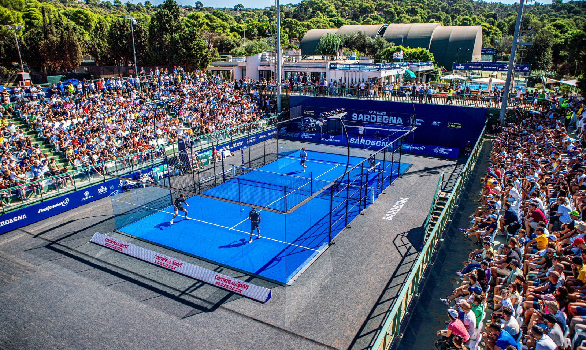
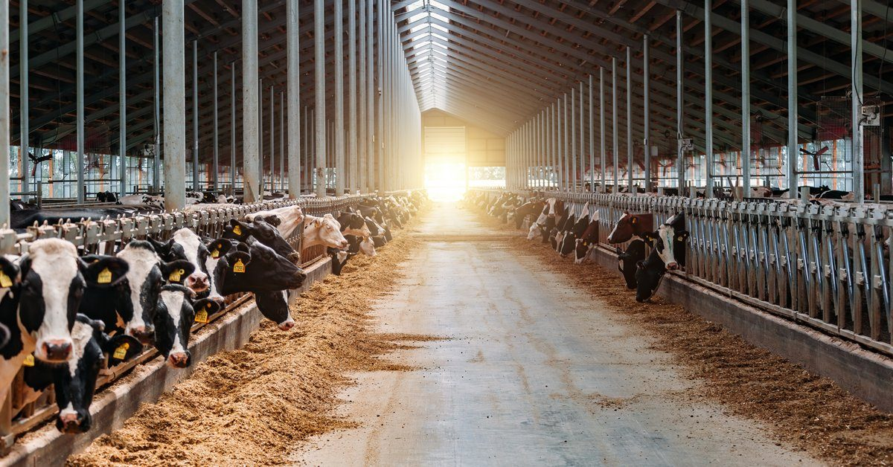
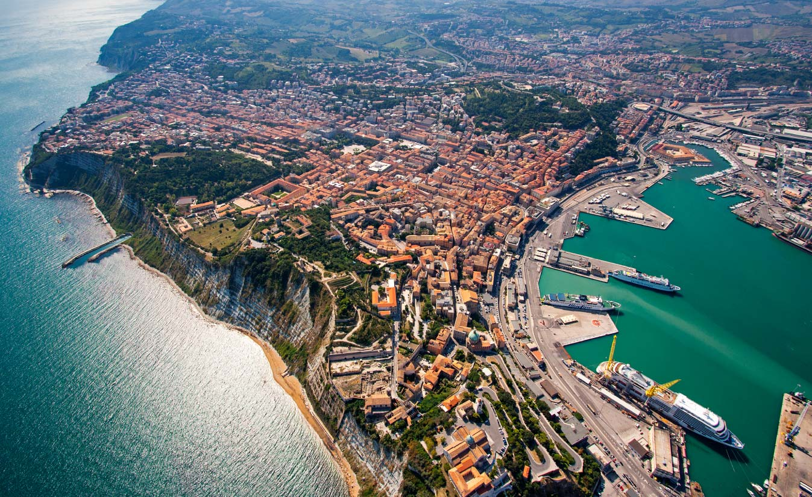

Studi indipendenti di impatto socioeconomico fondati su matrici di contabilità sociale, tavole input-output e dati istituzionali, con analisi costi-benefici e SROI quando serve un giudizio di convenienza. Per imprese e pubbliche amministrazioni che devono decidere con evidenze, non con intuizioni.
Quanto attiva un investimento? Ogni studio parte da una variazione esogena della domanda finale: la Social Accounting Matrix, alimentata dalle tavole input-output ISTAT, ne segue gli effetti diretti, indiretti e indotti su produzione, redditi, occupazione e gettito.
Quanto conviene, e per chi? Dove la domanda è il valore, l'impatto si integra con l'analisi costi-benefici — benefici e costi a prezzi ombra, esternalità comprese — e con lo SROI, che monetizza il valore sociale generato per gli stakeholder. Tre strumenti, lo stesso rigore quantitativo.
Una selezione di analisi d'impatto su eventi, politiche e territori, confrontabili tra loro grazie a una metodologia condivisa.
Nessuno studio corrisponde alla ricerca.

Settembre 2026 EN · ITLettura economica del sistema padel mondiale per la Federazione Internazionale: spesa attivata, PIL, occupazione e gettito in 76 paesi più il Resto del mondo, con gli impatti separati fra mercato del padel e indotto e cento schede federazione.
Analisi socioeconomica del procurement ENI nel biennio 2024–2025: impatto sulla filiera produttiva italiana in termini di PIL, occupazione, redditi e gettito fiscale.
Programma FIFA–WTO di analisi socioeconomica del calcio mondiale: dalla Women's World Cup 2023 al Club World Cup 2025 e ai Mondiali 2026, con focus su commercio e sviluppo sostenibile.
Analisi degli effetti di una siccità severa su agricoltura, prezzi alimentari, PIL, occupazione e ricadute regionali fino al 2030.

Giugno 2026 ITStima degli effetti della misura del ddl Coltivaitalia sugli allevamenti italiani: valore aggiunto, import, occupazione e impatto territoriale.

Maggio 2026 ITImpatto economico footprint della spesa comunale marchigiana, con dettaglio per provincia su PIL, produzione, occupazione, redditi e gettito.
L'impatto socioeconomico dell'eliminazione della Nazionale: mancato PIL, produzione, redditi, occupazione e gettito fiscale non generati.
Analisi del comparto aerospazio e difesa italiano: filiera, impatto economico, occupazione e prospettive di crescita nel contesto europeo.
Analisi dell'impatto macroeconomico della spesa audiovisiva italiana: ricadute su PIL, produzione, occupazione, redditi e gettito dell'industria televisiva nazionale.
Valutazione ex-post degli investimenti RFI 2021–2024 e analisi ex-ante per il 2025: impatto su PIL, produzione, occupazione, redditi e gettito fiscale.